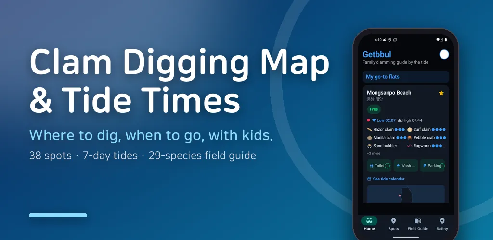
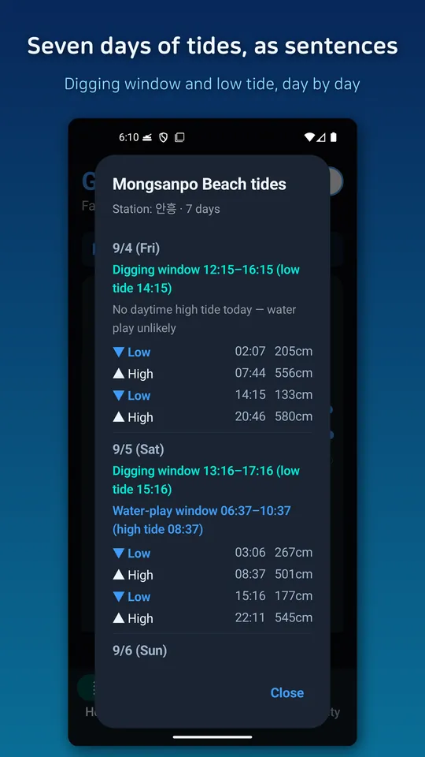
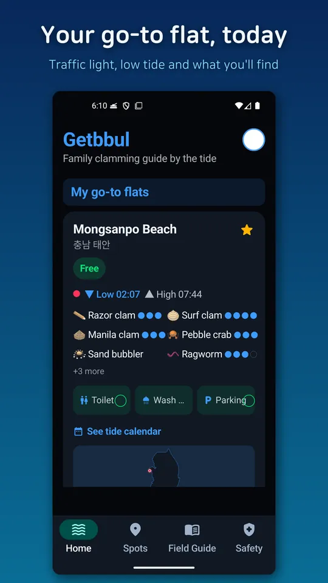
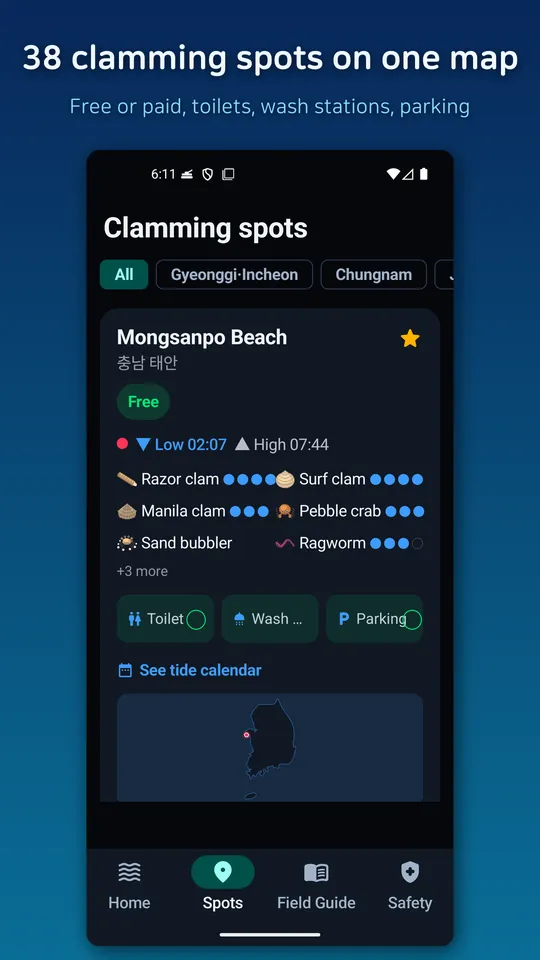
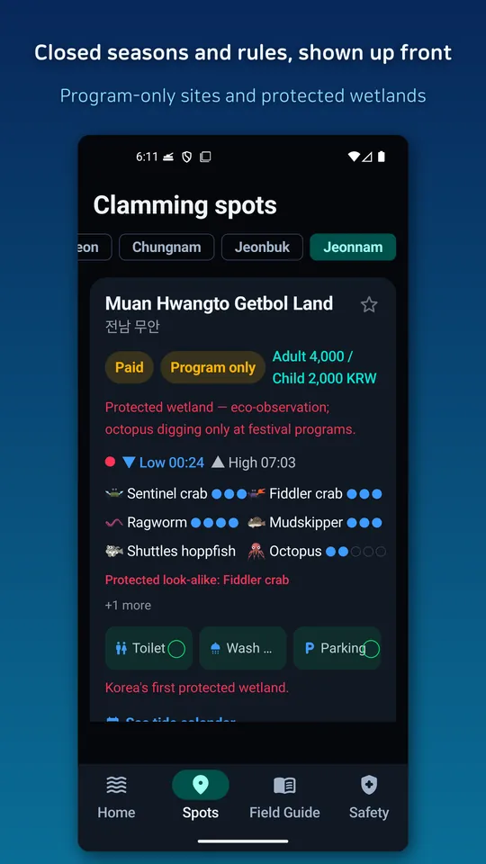
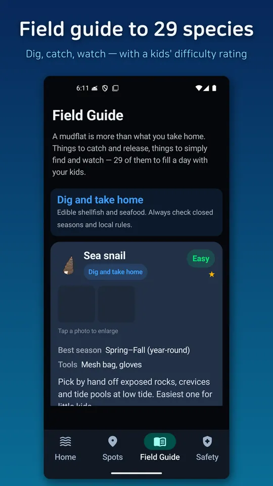
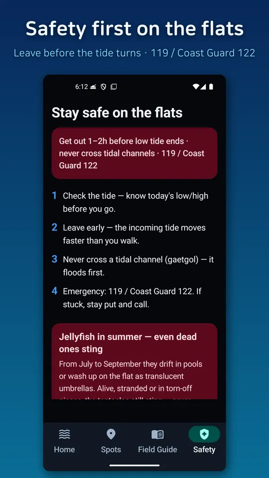

Clam Digging Map & Tide Times
Find clam-digging spots, tide times and today's golden window on one map.







About this app
Want to dig clams with your kids but not sure where or what time to go? Getbbul is built for family clamming, not for anglers.
- Tides as a sentence, not a number
"Low tide 02:25" doesn't tell you when to leave. Getbbul says
"Golden window 08:40-12:40 (low tide 10:40)" and flags days with a morning low tide, the easiest kind with kids.
A traffic light shows whether it's good to dig now (green) or the water is coming in (red).
- Everything you need to pick a spot
- Clamming spots across Korea with what you'll actually find (species abundance)
- Free or paid (verified fees), plus toilet, wash station and parking
- Sorted by distance; save your regular flats as favorites
- 7-day tide view for planning a weekend
- Field guide of 29 species - from digging to purging
- How to catch Manila clams, razor clams, surf clams, cockles, sea snails, oysters, octopus, crabs - with a kid-difficulty rating
- Sorted into dig & take home / fun to catch / find & watch / take care - even on a bad tide day there's plenty to spot with kids (fiddler crabs, sea stars, anemones and more)
- Photos and illustrations so you can tell what you just dug up
- After the catch: purging and storage, including the mistakes that ruin it
- Daily morning tide alert
Get today's golden digging window for your go-to flat as a one-line alert each morning. Turn it off anytime from Home.
- Safe and legal
- How to avoid being cut off by the incoming tide, plus a summer jellyfish warning (even dead ones sting)
- Closed-season badges for hard clams, octopus, webfoot octopus and blue crab
- Restriction badges - "observe only" for protected wetlands, "program only" where digging is allowed at designated sites
- Grows with your reports
Fee changed? Something wrong? Tap yes (it's there) / no (it's not) on any fact, or send a written report.
Tide data from the Korea Hydrographic and Oceanographic Agency (KHOA) open data.
Access rules, fees and closed seasons vary by local ordinance and site conditions. Please check with the local fishing village or authority before you go and follow on-site guidance.
Android · free with ads · Developer: RealTunaLove · Store listing in 17 languages
Background story: why I built it